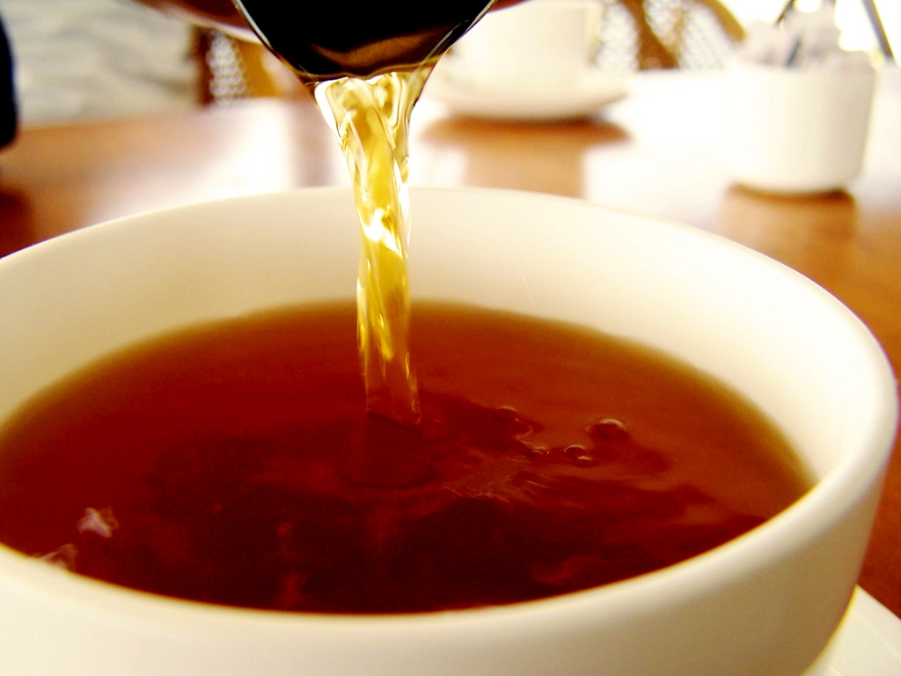
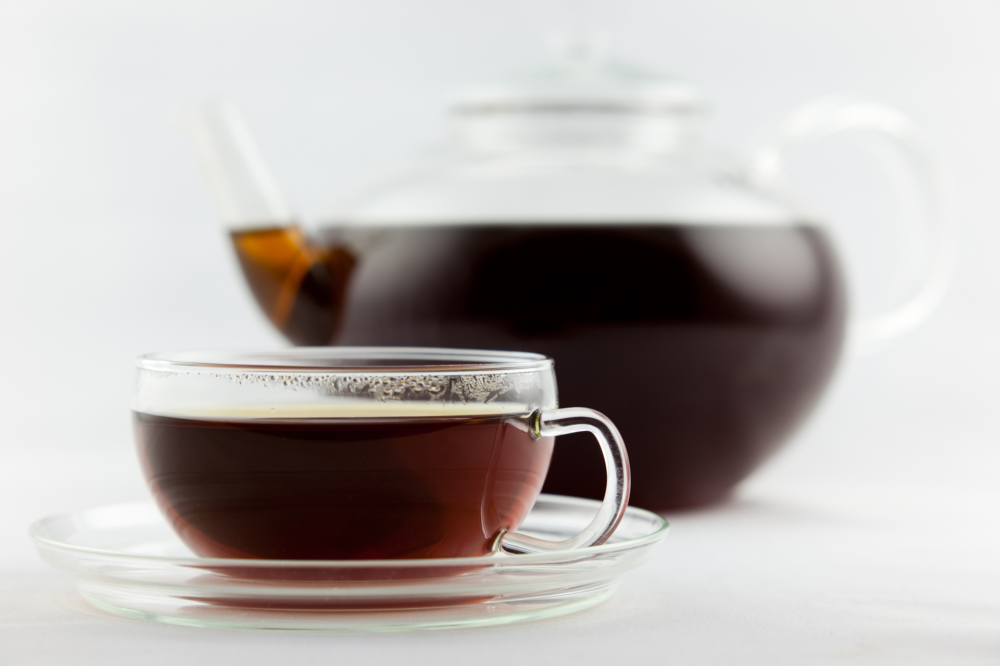

Black Tea
Black tea is a type of tea that is more oxidized than oolong, green and white teas. Black tea is generally stronger in flavour than the less oxidized teas. All four types are made from leaves of the shrub (or small tree) Camellia sinensis. Two principal varieties of the species are used – the small-leaved Chinese variety plant (C. sinensis subsp. sinensis), used for most other types of teas, and the large-leaved Assamese plant (C. sinensis subsp. assamica), which was traditionally mainly used for black tea, although in recent years some green and white have been produced.
 In Chinese and the languages of neighbouring countries, black tea is known as "red tea" (Chinese 紅茶 hóngchá, pronounced [xʊ̌ŋʈʂʰǎ]; Japanese 紅茶 kōcha; Korean 홍차 hongcha, Bengali লাল চা Lal cha, Assamese ৰঙা চাহ Ronga chah), a description of the colour of the liquid; the Western term "black tea" refers to the colour of the oxidized leaves. In Chinese, "black tea" is a commonly used classification for post-fermented teas, such as Pu-erh tea; outside of China and its neighbouring countries, "red tea" more commonly refers to rooibos, a South African herbal tea.
While green tea usually loses its flavor within a year, black tea retains its flavour for several years. For this reason, it has long been an article of trade, and compressed bricks of black tea even served as a form of de facto currency in Mongolia, Tibet and Siberia into the 19th century. Although green tea has recently seen a revival due to its purported health benefits, black tea still accounts for over ninety percent of all tea sold in the West.
In Canada, the definition of black tea is a blend of two or more black teas of the leaves and buds of the Camellia Sinensis plant that contain at least 30 percent water-soluble extractive, with 4 to 7 percent ash. Unblended black tea contains at least 25 percent water-soluble extractive, with 4 to 7 percent ash. Packaging of black tea is based on the packaging guidelines from the country of origin.
Preparation
Generally, 4 grams of tea per 200 ml of water. Unlike green teas, which turn bitter when brewed at higher temperatures, black tea should be steeped in water brought up to 90–95 °C. The first brew should be 60 sec., the second brew 40 sec., and the third brew 60 sec. If your tea is of high quality, you can continue to brew by progressively adding 10 sec. to the brew time following the third infusion (note: when using a larger tea pot the ratio of tea to water will need to be adjusted to achieve similar results).
Standard black tea brewing
- Brew temperature 90-95 °C
- Standard 200 ml water
- 4 g of tea
- Brew times: 60-40-60-70-80-(+10) seconds
- A cold vessel lowers the steep temperature; to avoid this, always rinse the vessel with +90 °C water before brewing.
The more delicate black teas, such as Darjeeling, should be steeped for 3 to 4 minutes. The same holds for broken leaf teas, which have more surface area and need less brewing time than whole leaves. Whole-leaf black teas, and black teas to be served with milk or lemon, should be steeped 4 to 5 minutes. Longer steeping times makes the tea bitter (at this point, it is referred to as being "stewed" in the UK). When the tea has brewed long enough to suit the drinker's taste, it should be strained before serving.